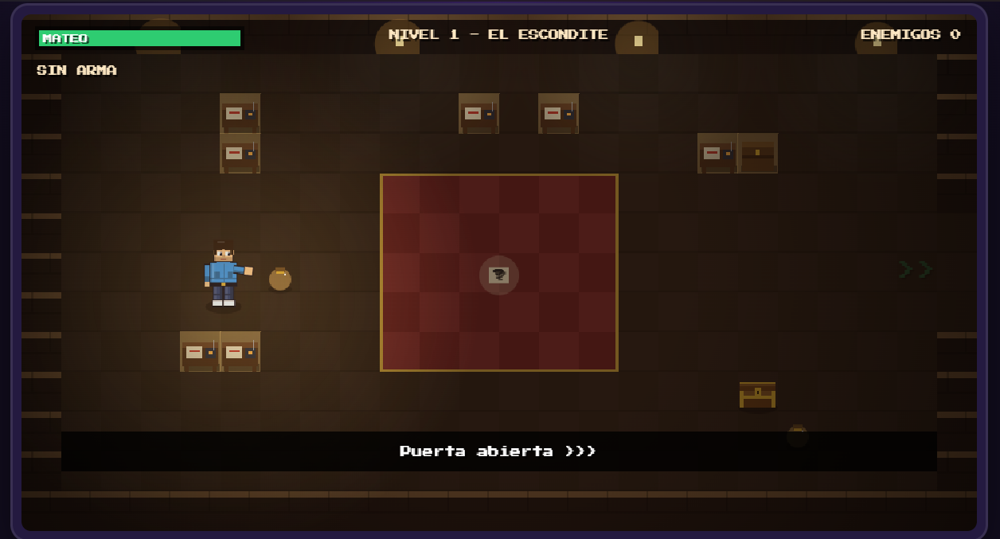
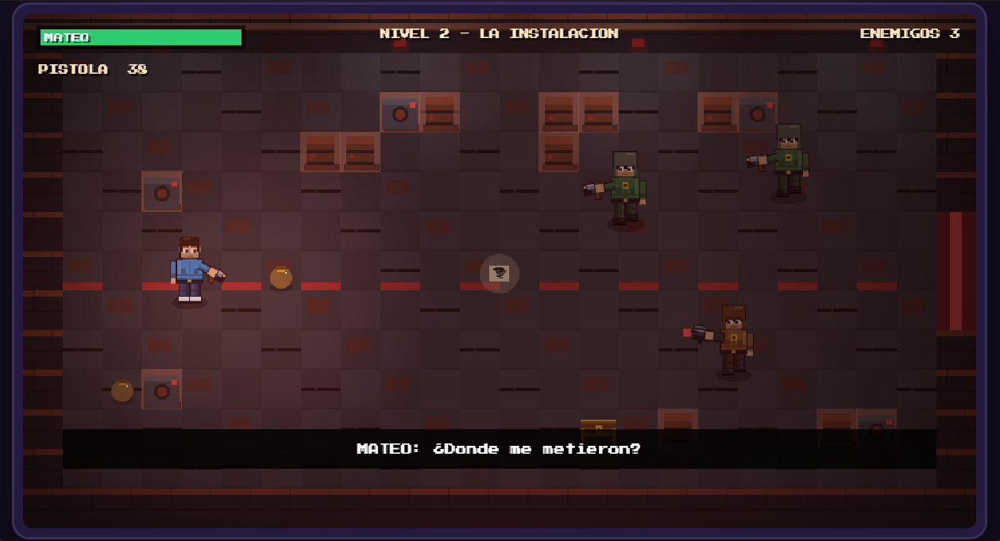
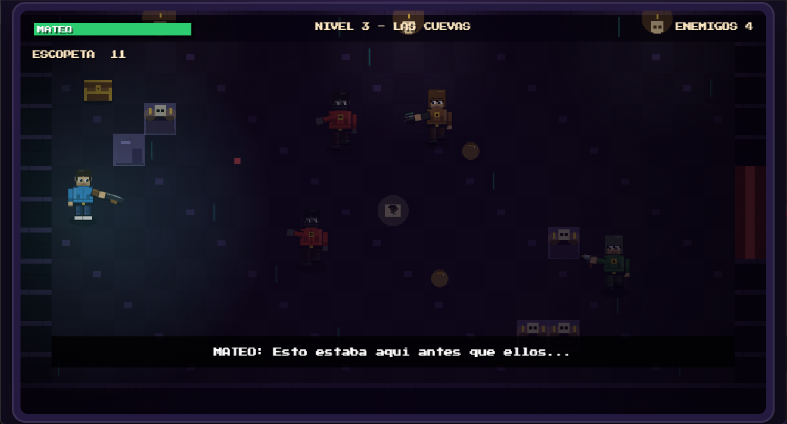
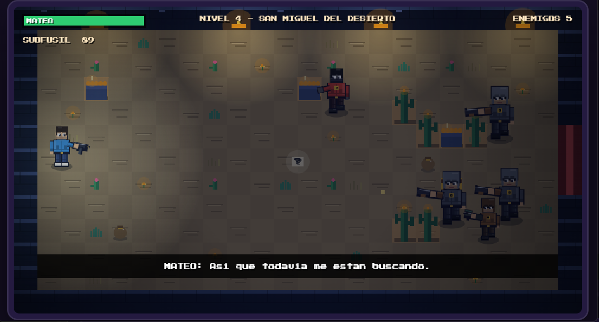
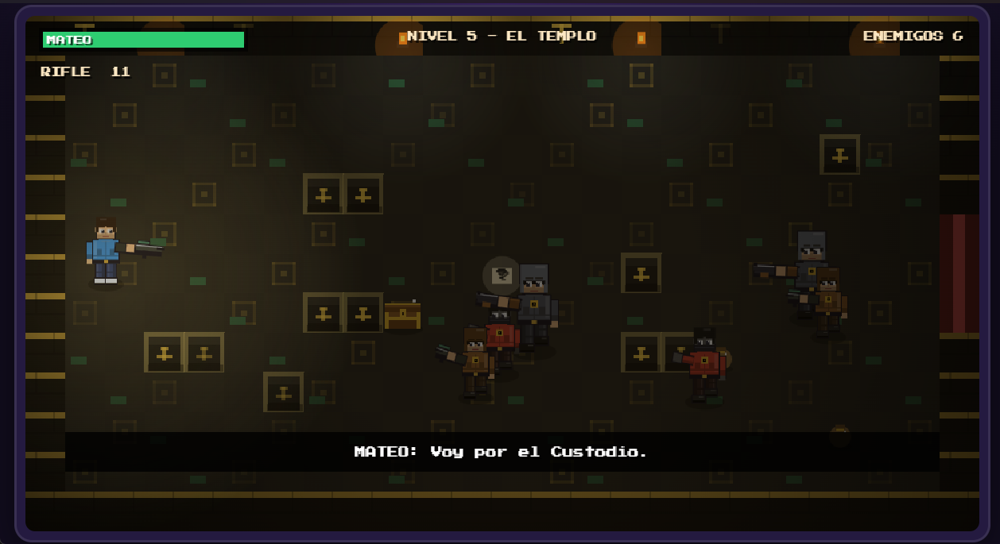
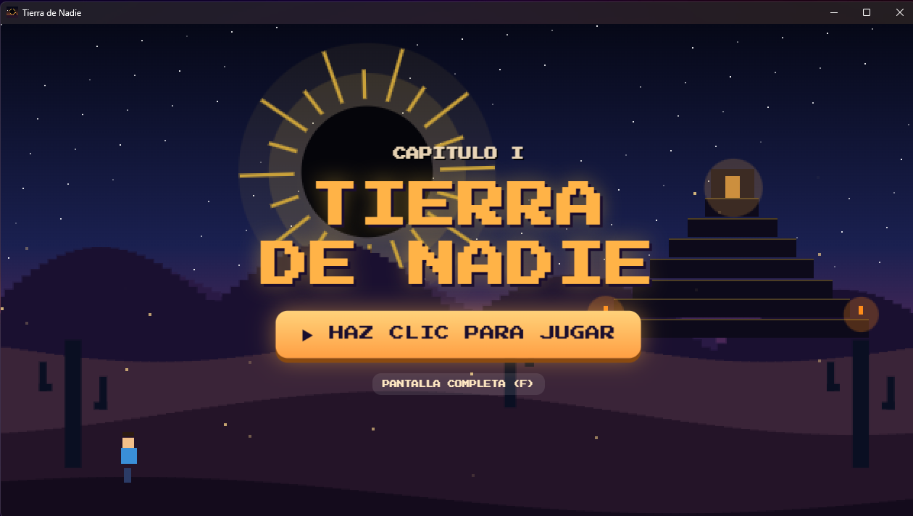

01
EXPLORACIÓN
Recorre instalaciones, cuevas y lugares aislados mientras buscas pistas para avanzar.
UNA AVENTURA DE ACCIÓN 2D
Hay lugares de los que nadie habla.
Y secretos que nunca debieron salir a la luz.
Mateo tiene 19 años y una vida que está a punto de cambiar para siempre.
Tras ser secuestrado por una organización clandestina conocida como La Orden del Sol Negro, despierta en una instalación oculta entre las montañas. Su única opción es escapar, descubrir por qué lo buscan y encontrar la conexión entre la organización y su abuelo Gabriel Ortega.
Cada documento encontrado y cada enfrentamiento lo acercarán a una verdad mucho más grande de lo que imaginaba.
EXPLORAR EL MUNDO →Algunas verdades permanecen ocultas por una razón.
Explora escenarios, administra tus recursos y enfréntate a quienes protegen los secretos de la Orden.
Recorre instalaciones, cuevas y lugares aislados mientras buscas pistas para avanzar.
Enfrenta distintos tipos de enemigos y utiliza tus armas para sobrevivir.
Encuentra munición y objetos de curación. Cada recurso puede marcar la diferencia.
El camino de Mateo lo llevará desde su primer escondite hasta el corazón de la organización.

El primer paso para recuperar la libertad.

Un lugar donde nada parece ser lo que aparenta.

La oscuridad esconde más que caminos.

Las huellas de la Orden llegan más lejos de lo esperado.

El camino conduce al centro del secreto.
La supervivencia dependerá de cómo utilices lo que encuentres en el camino.
Un adelanto visual de los escenarios que encontrarás durante la aventura.

TIERRA DE NADIE — CAPÍTULO IPrepárate para descubrir lo que se oculta detrás de La Orden del Sol Negro.
DESCARGA PRÓXIMAMENTE ↗ Versión para Windows · Enlace de descarga pendiente